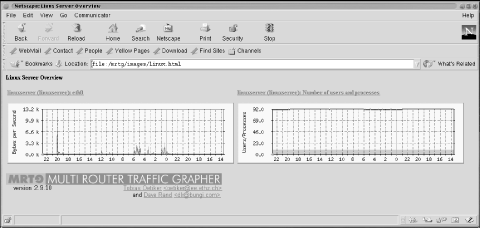
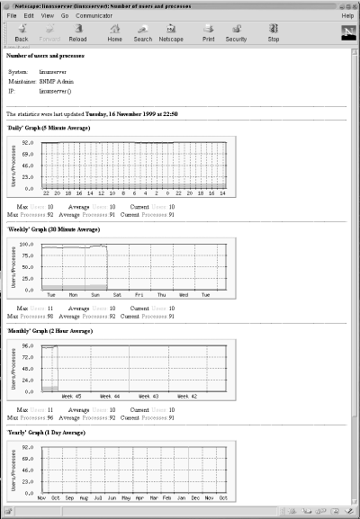

13.3. Graphing Other Objects
MRTG
polls and graphs the MIB variables ifInOctets
and ifOutOctets by default, but it is possible
to poll and graph the values of other objects, in addition to polling
different kinds of devices. Let's first get MRTG collecting
input and output octets from a server. To do this, run the following
command:
[root][linuxserver] ~/mrtg-2.9.10> cfgmaker public@linuxserver >> \
/mrtg2/run/mrtg.cfg
This is almost identical to the command we ran earlier in the
chapter, except for the community string and target[71]
(public@linuxserver). We appended the output to
the mrtg.cfg file, as opposed to specifying an
output file with the - -output option; this lets
us add a new host to the existing configuration file, rather than
starting a new file. Because the existing file already specifies a
working directory, we also omitted the working directory option
(- -global 'WorkDir: .. ' ). This
cfgmaker command adds a number of lines like the
following to the configuration file:
Target[linuxserver]: 2:public@localhost
MaxBytes[linuxserver]: 1250000
Title[linuxserver]: linuxserver(linuxserver): eth0
PageTop[linuxserver]: <H1>Traffic Analysis for eth0
</H1>
<TABLE>
<TR><TD>System:</TD><TD>linuxserver</TD></TR>
<TR><TD>Maintainer:</TD><TD></TD></TR>
<TR><TD>Interface:</TD><TD>eth0 (2)</TD></TR>
<TR><TD>IP:</TD><TD>linuxserver( )</TD></TR>
<TR><TD>Max Speed:</TD>
<TD>1250.0 kBytes/s (ethernetCsmacd)</TD></TR>
</TABLE>
These lines tell MRTG how to poll
the server's Ethernet interface. The key used for this
interface is linuxserver, and the target number is
2. Why 2? Remember that
cfgmaker walks the interface table to determine
what entries to add to the configuration file. Therefore,
you'll see a set of lines like this for each interface on the
device, including the loopback interface. The target numbers are
actually indexes into the interface table; on this server, the
loopback interface has the index 1.
Now
let's create an entry to graph the number of users logged onto
the server and the total number of processes running. MRTG is capable
of graphing these parameters, but you have to specify explicitly
which MIB variables to graph. Furthermore, you have to specify two
variables -- MRTG won't graph just one. (This is a rather
strange limitation, but at least it's consistent: remember that
the default graphs show both input and output octets.)
First, let's look at the MIB variables we plan to graph. The
two variables, hrSystemNumUsers and
hrSystemProcesses, are defined as OIDs
1.3.6.1.2.1.25.1.5.6.0 and
1.3.6.1.2.1.25.1.6.0, respectively. The
.0 at the end of each OID indicates that these
two objects are both scalar variables, not part of a table. Both come
from the Host Resources MIB (RFC 2790), which defines a set of
managed objects for system administration. (Some agents that run on
server systems implement this MIB but, unfortunately, the Microsoft
and Solaris agents do not.) The definitions for these objects are:
hrSystemNumUsers OBJECT-TYPE
SYNTAX Gauge
ACCESS read-only
STATUS mandatory
DESCRIPTION
"The number of user sessions for which this host is storing state
information. A session is a collection of processes requiring a
single act of user authentication and possibly subject to collective
job control."
::= { hrSystem 5 }
hrSystemProcesses OBJECT-TYPE
SYNTAX Gauge
ACCESS read-only
STATUS mandatory
DESCRIPTION
"The number of process contexts currently loaded or running on
this system."
::= { hrSystem 6 }
The entry we added to our configuration file looks like this:
Target[linuxserver.users]:1.3.6.1.2.1.25.1.5.0&1.3.6.1.2.1.25.1.6.0:public@linuxserver
MaxBytes[linuxserver.users]: 512
Options[linuxserver.users]: gauge
Title[linuxserver.users]: linuxserver (linuxserver): Number of users and processes
YLegend[linuxserver.users]: Users/Processes
LegendI[linuxserver.users]: Users:
LegendO[linuxserver.users]: Processes:
PageTop[linuxserver.users]: <H1>Number of users and processes</H1>
<TABLE>
<TR><TD>System:</TD><TD>linuxserver<TD></TR>
<TR><TD>Maintainer:</TD><TD></TD></TR>
<TR><TD>IP:</TD><TD>linuxserver( )</TD></TR>
</TABLE>
We've highlighted the
changes and additions to the configuration file in bold. The first
line specifies the device we want MRTG to poll, along with the two
OIDs (hrSystemNumUsers and
hrSystemProcessess) we want to graph. This
statement is obviously more complex than the
Target statement we looked at earlier; its syntax
is OID1&OID2:community_string@device. The
OIDs must be separated by an ampersand character
(&). Using this syntax, you can convince MRTG
to graph any two scalar-valued MIB variables.
In the next line, we set MaxBytes to
512. This is the maximum value for the graph;
values greater than 512 are set to 512. (Forget
about bytes; MaxBytes simply defines a maximum
value.) For the number of users logged in, this is a high number;
there should never be this many people logged onto our system at
once. The same goes for the total number of processes running on the
system. You can choose values that make sense for your particular
environment. If you need separate maximum values for each object,
replace MaxBytes with two lines setting
MaxBytes1 and MaxBytes2.
The Options command is a new one; it allows you to
change how MRTG treats the data it gathers. The only option we have
specified is gauge. This instructs MRTG to treat
the gathered data as Gauge data, not
Counter data. Recall that
Counter data is monotonically increasing, while
Gauge data is not. Since the MIB definitions for
both objects specify the Gauge datatype, this
option makes sense.
The
YLegend, LegendI, and
LegendO options are also new.
YLegend simply changes the label that is placed on
the Y-axis of the graph itself. Since we're graphing the number
of users and processes, we set the legend to
Users/Processes. It's important for the
legend to be short; if it's too long, MRTG silently ignores it
and doesn't print anything for the label.
LegendI changes the legend used below the graph
for the so-called "input variable" (in this case the
number of users logged into the system -- remember that MRTG
expects to be graphing input and output octets).
LegendO changes the legend for the "output
variable" (the total number of processes running on the
system). The terminology is unfortunate; just remember that MRTG
always graphs a pair of objects and that the input legend always
refers to the first object, while the output legend refers to the
second.
Once you have added this entry to your
configuration file and saved it, MRTG will start gathering data from
the device every time it runs. If you have added the appropriate
entry in your crontab file, you're all
set. Now we'll use indexmaker to create
intuitive index files for the server graphs, just as we did for the
router graphs. The command to create a new index file is similar to
the one we used to create the Cisco index file:
[root][linuxserver] ~/mrtg-2.9.10> indexmaker --title "Linux Server" \
--filter name=~'linuxserver' --output /mrtg/images/linux.html /mrtg/run/mrtg.cfg
Figure 13-3 shows the index page for the server
graphs. It contains only two graphs: one shows traffic on the
Ethernet interface and the other shows the number of running
processes versus the number of users logged onto the system.

Figure 13-3. Linux Server overview graphs
Figure 13-4 shows the daily, weekly, monthly, and
yearly graphs for the number of users and processes logged into the
system.

Figure 13-4. Daily, monthly, weekly, and yearly graphs for number of users and processes
 |  |  |
| 13.2. Viewing Graphs |  | 13.4. Other Data-Gathering Applications |

Copyright © 2002 O'Reilly & Associates. All rights reserved.